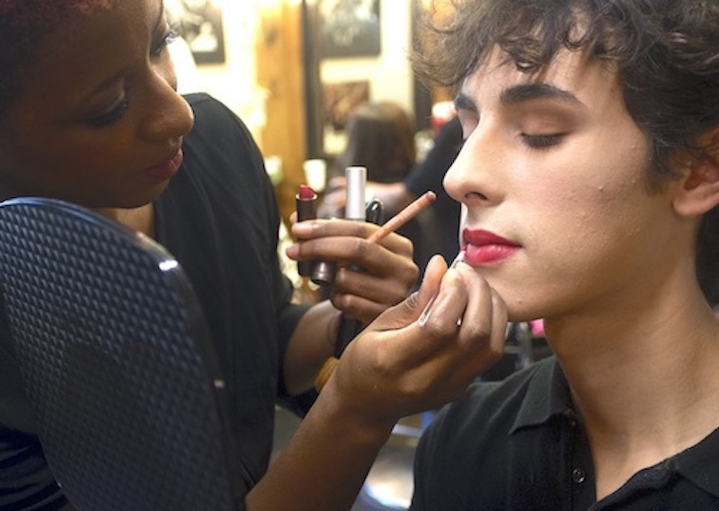

Covered the D.C. City Council; researched investigative articles; profiled prominent LGBT entertainment, sports and cultural figures for feature stories; updated weekly events calendar; completed other reporting assignments as requested for special issues.
Took pictures and wrote local news and feature stories of interest to the University of Maryland and College Park communities.
Wrote articles and took pictures for print and web editions. Assignments included covering diverse campus events such as sports, theater, dance, cultural events and campus safety (crime beat). Also covered science and judiciary lectures and presentations.
Provided techincal support for students utilizing campus computers and educaitonal software at the off-site Arundel Mills satellite campus location. Primarily answered questions about how to use the math tutoring software, Microsoft Office suite and Adobe programs to help students complte research papers, projects and presentations.
- Ph.D. Political Science, University of Nebraska-Lincoln, 2010
- M.A. Communication Studies (w/emphasis in rhetoric), San Diego State University, 2002
- M.A. Journalism, University of Maryland (in progress)
- B.A. Communication, San Diego State University, 1997
- A.A. English Transfer Studies, Anne Arundel Community College, 2019
- Research gathering (online, in-person interviewing, library searches, databases)
- Data analysis (descriptive, comparative, statistical, multivariate regression analysis)
- Writing (research, technical, creative/narrative, basic HTML and CSS coding)
- Photography (Canon SX50 PowerShot, Nikon D7500 DSLR camera, basic photoediting)
- Languages (French, some spoken & written; Japanese, written)
 Return to top
Return to topLucid Dreaming Interactive Tech Display Return to top
MaryPIRG Mass Incarceration Film Screening Return to top
Arts Coverage
 Return to top
Return to topLocal Sports Return to top
LGBTQ Community Visibility 
 Return to top
Return to topLocal Community Events
 Return to top
Return to topPublications